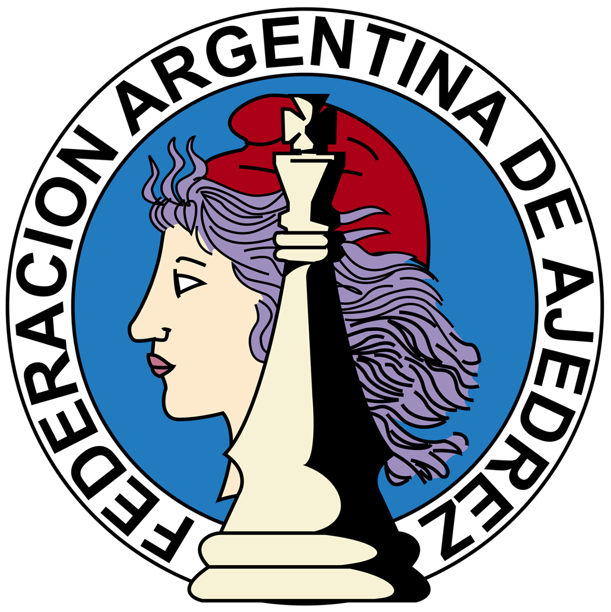
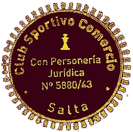
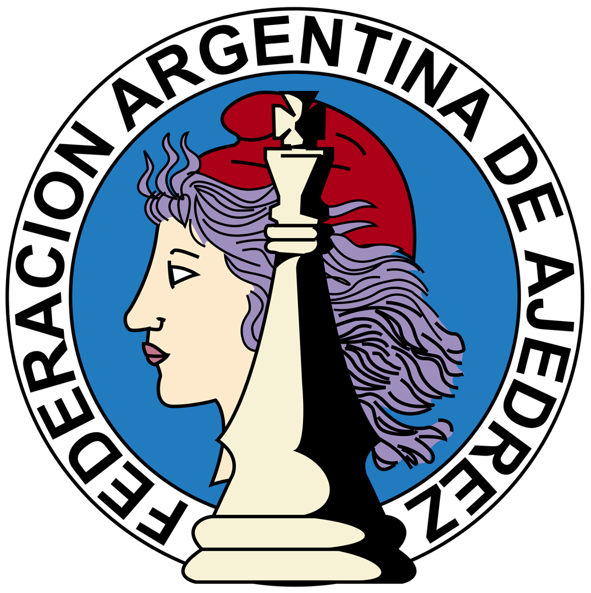
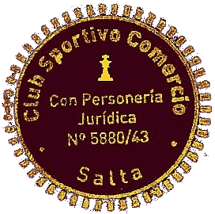

Federación Salteña de Ajedrez
La Federación Salteña de Ajedrez fundada en su acta constitutiva el 22 de Septiembre de 1973 y decretada con personería juridica el 21 de Mayo de 1974 participó y trajó a lo largo de su historia representada a través de sus deportistas a Salta medallas, trofeos y campeonatos nacionales sudamericanos , panamericanos, olimpiadas clasificando a sus jugadores a torneos mundiales en su parte federada competitiva.
En su faceta social entro al corazón de villas y barrios de Salta a través del programa Jaque Mate a la Violencia coordinado y supervisado por la FSA que quedo sin efecto desde el 2020 hasta la fecha igualmente la Federación trabajó cuando más arreciaba el flagelo de la pandemia ayudando a merenderos y comedores, donando plasma y con sus instructores estuvieron conteniendo a la sociedad (niños, jovenes y adultos mayores ) gratuitamente realizando talleres de aprendizaje.- Es una Institución que en el año 2020 fue elegida entre las 500 instituciones deportivas más prestigiosas de la Républica Argentina a través de proyectos presentados y con todos sus papeles administrativos al día como tiene que ser ,trabajo incansable de la comisión directiva representada por los clubes afiliados con presencia social y deportiva en la Provincia de Salta .Nuestra Institución es una activa Federación de la Confederación de Deportes de Salta desde su creación según ley 7913 modificada hasta la actualidad por la Ley 6710 , según última Acta de la confederación de Deportes nuestra institución participó como Organo de Fiscalización titular a través de su actual Presidente Sr. Eduardo Di Carlo. con la nota presentada por el mismo presidente de la FSA a la Dirección de Personería Juridica se lograría normalizar sin confrontaciones y de manera simple la Confederación de deportes tan necesaria en este momento para las más de 35 disciplina deportivas que se desarrollan en toda la provincia de Salta.-
A continuación las intituciones con la que la Federación Salteña de Ajedrez esta trabajado conjuntamente.
 


